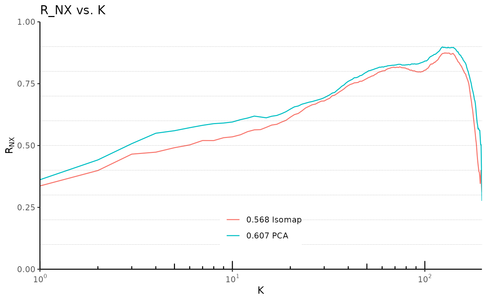

Plot the R_NX curve for different embeddings. Takes a list of
dimRedResult objects as input.
Also the Area under the curve values are computed for a weighted K
(see AUC_lnK_R_NX for details) and appear in the legend.
Arguments
- x
a list of
dimRedResultobjects. The names of the list will appear in the legend with the AUC_lnK value.- ndim
the number of dimensions, if
NAthe original number of embedding dimensions is used, can be a vector giving the embedding dimensionality for each single list element ofx.- weight
the weight function used for K when calculating the AUC, one of
c("inv", "log", "log10")
See also
Other Quality scores for dimensionality reduction:
AUC_lnK_R_NX,dimRedResult-method,
LCMC,dimRedResult-method,
Q_NX,dimRedResult-method,
Q_global,dimRedResult-method,
Q_local,dimRedResult-method,
R_NX,dimRedResult-method,
cophenetic_correlation,dimRedResult-method,
distance_correlation,dimRedResult-method,
mean_R_NX,dimRedResult-method,
quality,dimRedResult-method,
reconstruction_error,dimRedResult-method,
reconstruction_rmse,dimRedResult-method,
total_correlation,dimRedResult-method
Examples
if(requireNamespace(c("RSpectra", "igraph", "RANN", "ggplot", "tidyr", "scales"), quietly = TRUE)) {
## define which methods to apply
embed_methods <- c("Isomap", "PCA")
## load test data set
data_set <- loadDataSet("3D S Curve", n = 200)
## apply dimensionality reduction
data_emb <- lapply(embed_methods, function(x) embed(data_set, x))
names(data_emb) <- embed_methods
## plot the R_NX curves:
plot_R_NX(data_emb) +
ggplot2::theme(legend.title = ggplot2::element_blank(),
legend.position = c(0.5, 0.1),
legend.justification = c(0.5, 0.1))
}
#> 2025-04-24 07:15:41.226243: Isomap START
#> 2025-04-24 07:15:41.226642: constructing knn graph
#> 2025-04-24 07:15:41.231737: calculating geodesic distances
#> 2025-04-24 07:15:41.257763: Classical Scaling
#> Warning: `gather_()` was deprecated in tidyr 1.2.0.
#> ℹ Please use `gather()` instead.
#> ℹ The deprecated feature was likely used in the dimRed package.
#> Please report the issue at <https://github.com/gdkrmr/dimRed/issues>.
#> Warning: A numeric `legend.position` argument in `theme()` was deprecated in ggplot2
#> 3.5.0.
#> ℹ Please use the `legend.position.inside` argument of `theme()` instead.
